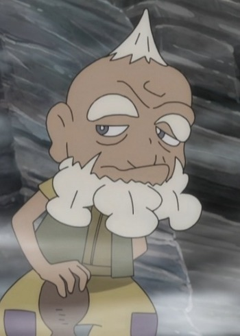

|
Ken Uo is a Japanese voice actor. He is well known for his roles are Karin in Dragon Ball and Amayo Jingoro in Basilisk.
|
|---|
| |
Mitsuhiro Ide | Ultraman | Mitsuhiro Ide is a life long friend of Shin Hayama and uncle figure to his son. As the tech wizard of the original SSSP team, he is the force behind the creation of Ultraman Suits. |
|  | Sofu | Pokemon Sun and Moon | Sofu is the late grandfather of Hapu and a former Island Kahuna of Poni Island. |
Go Back to Main Page |
Go Back to Homepage |
|
|
|
OR |
|